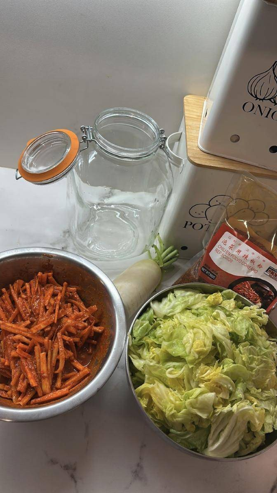
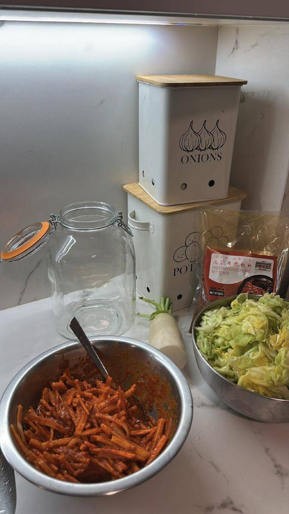
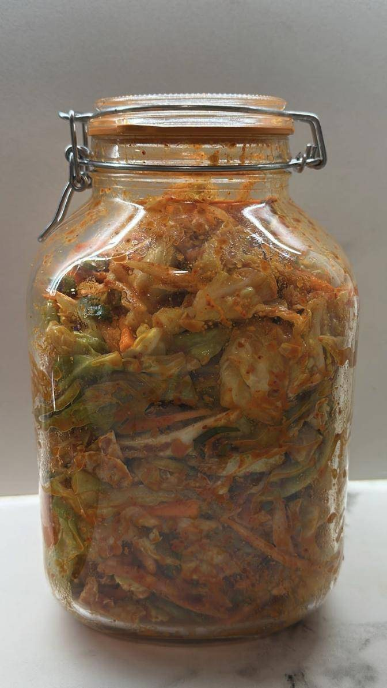

Kimchi caseiro: fermentamos fóra da cervexa

O 3 de marzo puxémonos co kimchi: repolo, rábano branco e chile coreano nun frasco para deixar traballar ás bacterias lácticas.
Como cervexeiros, o noso é a fermentación, e a fermentación non remata na cervexa. O 3 de marzo de 2026 fixemos kimchi caseiro, ese fermentado coreano picante que vai igual de ben cun prato de arroz que cunha IPA ben fría.
Os ingredientes
- Repolo, cortado en anacos. A receita tradicional usa col china (napa), pero o repolo funciona moi ben.
- Rábano branco (daikon) en tiras finas.
- Chile coreano en po (gochugaru), que dá a cor e o picante.
- E o que cada quen lle queira engadir á pasta: allo, xenxibre, cebolete…

O proceso
- Salgar o repolo. Frégase con sal e déixase repousar un par de horas, removendo de cando en vez, para que solte auga e quede flexible. Despois aclárase e escórrese ben.
- Preparar a pasta. Mestúrase o chile coreano co resto de aderezos, e envólvense nela as tiras de rábano.
- Mesturar todo. Con luvas, que o chile non perdoa, intégrase a pasta co repolo ata que todo quede ben cuberto.
- Envasar. Métese nun frasco ben limpo e calcase para que non queden bolsas de aire, deixando un pouco de espazo arriba.

A fermentación
Aquí é onde traballan as bacterias lácticas: comen os azucres das verduras e producen ácido láctico e CO₂. Por iso durante os primeiros días aparecen burbullas e convén abrir o frasco para que saia o gas.
- 1 ou 2 días a temperatura ambiente para arrincar a fermentación.
- Despois, á neveira, onde segue fermentando amodo e gaña acidez semana a semana.
- Se aparece mofo ou un cheiro desagradable (distinto do cheiro fermentado normal), fóra con el.

Se che interesan os fermentados máis alá da cervexa, bótalle un ollo aos nosos obradoiros de cervexa e outros fermentados.
- #fermentados
- #kimchi
- #receitas